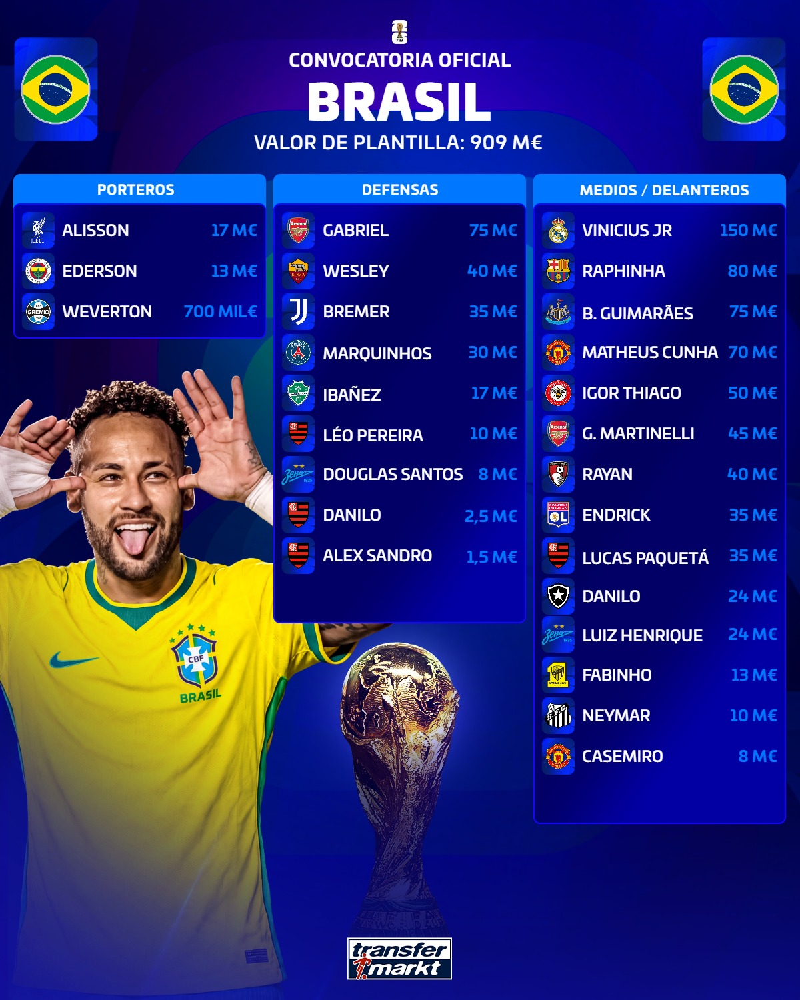
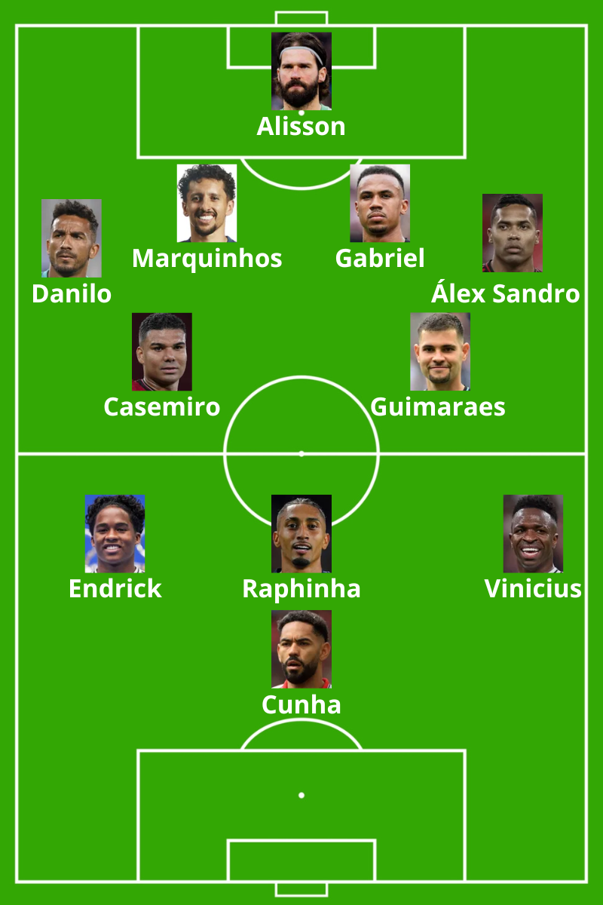

Estructura: 1-4-2-3-1

Ofensivamente, Brasil se presenta como una de las selecciones más talentosas del Mundial. El equipo cuenta con múltiples nombres diferenciales capaces de decidir partidos. El primero de ellos es Raphinha, quien en las últimas temporadas en el FC Barcelona ha evolucionado hacia un perfil más interior, participando con mayor frecuencia entre líneas y acercándose a zonas de creación, más allá de su rol tradicional de extremo.
Endrick, tanto en su etapa previa en Palmeiras como en la actual en Lyon, se perfila como un futbolista más peligroso partiendo desde el costado derecho que actuando como delantero centro fijo. Su capacidad para atacar espacios, romper líneas y generar ventajas en conducción lo convierte en una amenaza constante. En muchas ocasiones alternará posiciones con Matheus Cunha, un jugador que también destaca por su movilidad y por su preferencia por disponer de libertad táctica en el frente de ataque.
Este escenario explica la estructura ofensiva que se perfila como la más probable, especialmente teniendo en cuenta la aportación del lateral derecho, que puede aportar profundidad y proyección desde el lateral, así como la amplitud constante que ofrecerá Vinícius Júnior en el costado opuesto. Todo ello configura un ataque versátil, dinámico y difícil de fijar para las defensas rivales.
En la base del juego, Brasil podrá alternar de forma recurrente estructuras de salida en 3+2 o 4+2. El doble pivote formado por Casemiro y Bruno Guimarães aporta equilibrio, control y capacidad para gestionar la transición defensiva tras pérdida, un aspecto que Carlo Ancelotti priorizará especialmente para sostener al equipo en escenarios de desorganización.
En el plano creativo, merece una mención especial Neymar. Su condición física actual está por debajo de las exigencias que demanda una competición de este nivel, pero su talento sigue siendo diferencial en determinados contextos. En partidos ante bloques medios o bajos, puede ofrecer soluciones únicas en la generación de juego, el último pase y la creación de ventajas en espacios reducidos. Por este motivo, todo apunta a que partirá como un jugador de rotación, con minutos limitados pero con un impacto potencial muy alto en partidos concretos.
En fase defensiva, Brasil mostrará un comportamiento similar al de los equipos de Ancelotti en sus últimas etapas, especialmente el Real Madrid: bloque medio en 1-4-4-2, líneas compactas y una clara intención de recuperar el balón para lanzar transiciones rápidas aprovechando el enorme talento ofensivo del equipo. Una de las principales incógnitas será la posición de Vinícius Júnior en estos momentos sin balón, ya que podría asumir responsabilidades en el carril lateral en la presión o, por el contrario, permanecer más descolgado en zonas de ataque para condicionar la salida rival.
En conclusión, Brasil parte como una de las grandes favoritas del torneo gracias a la extraordinaria calidad individual de su plantilla y a su capacidad para generar peligro en transiciones. Sin embargo, su verdadero techo competitivo dependerá de su equilibrio colectivo, especialmente en los momentos defensivos y en la gestión de la estructura sin balón. Si logra consolidar esos automatismos bajo la dirección de Ancelotti, será una selección con argumentos suficientes no solo para competir, sino para aspirar de forma realista al título mundial.